Overview
SkinArch is W Labs' research-grade skin-analysis offering. At the accessible end, a digital optical microscope plus analysis software quantifies pore density, skin flake, surface texture, and skin tone/darkness from captured images. At the advanced end sits LC-OCT — line-field confocal optical coherence tomography — with an AI model that segments the dermal-epidermal junction (DEJ) and a browser-based viewer to explore the scans.
This was the most multi-disciplinary project I touched. Rather than a single screen set, I worked across the product's whole surface: the W Labs product page and a promo single-pager, a fully coded commercial video, and the UI redesign of the LC-OCT scan viewer now running for clients at viewer.wsoft.space.
The product
A single-pager frames the offering as four research-use service tiers — Pore Density, Pore & Flake, Comprehensive Surface, and Skin Tone / Darkness — each a device-plus-software package with its own catalogue number, included programs, and sample outputs. Color-coded, bilingual, and built to read as a credible research product.
Single-pager · Figma 43:5550
Analysis in action
Each service turns a microscope image into quantified, comparable metrics — pore counts per mm², flake coverage ratio, texture roughness (Laplacian variance), and a skin-tone read with Fitzpatrick type and melanin index.
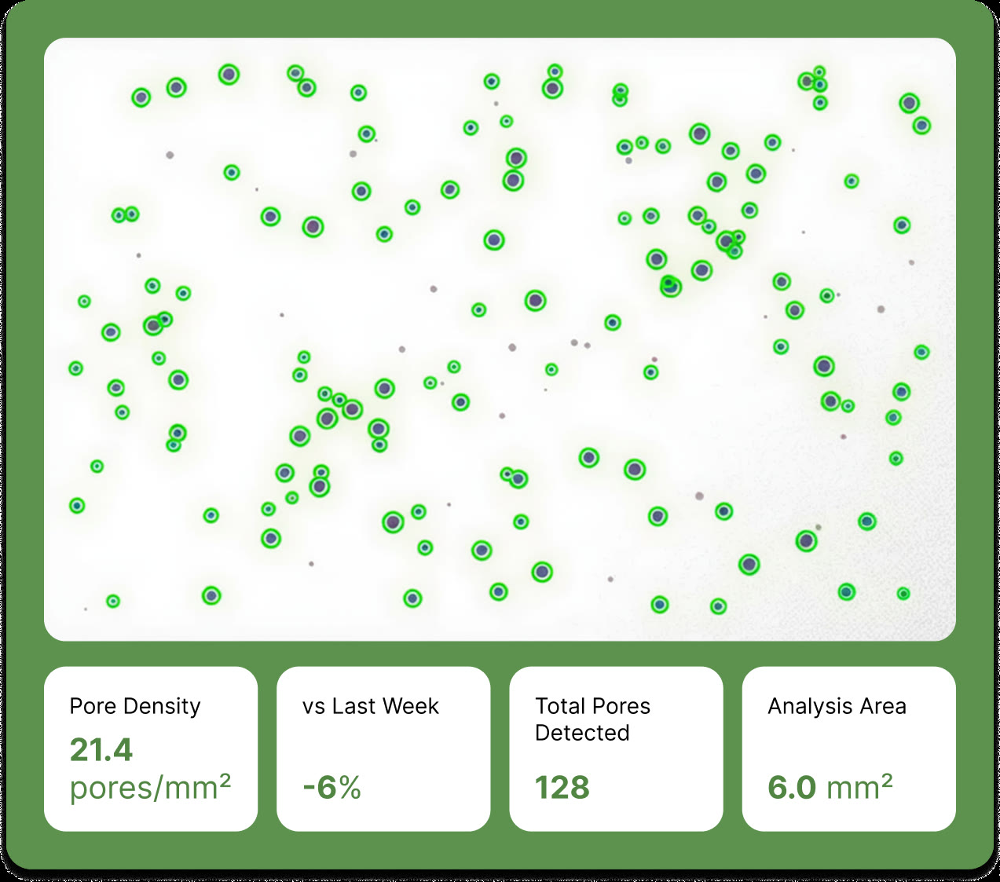
Pore density
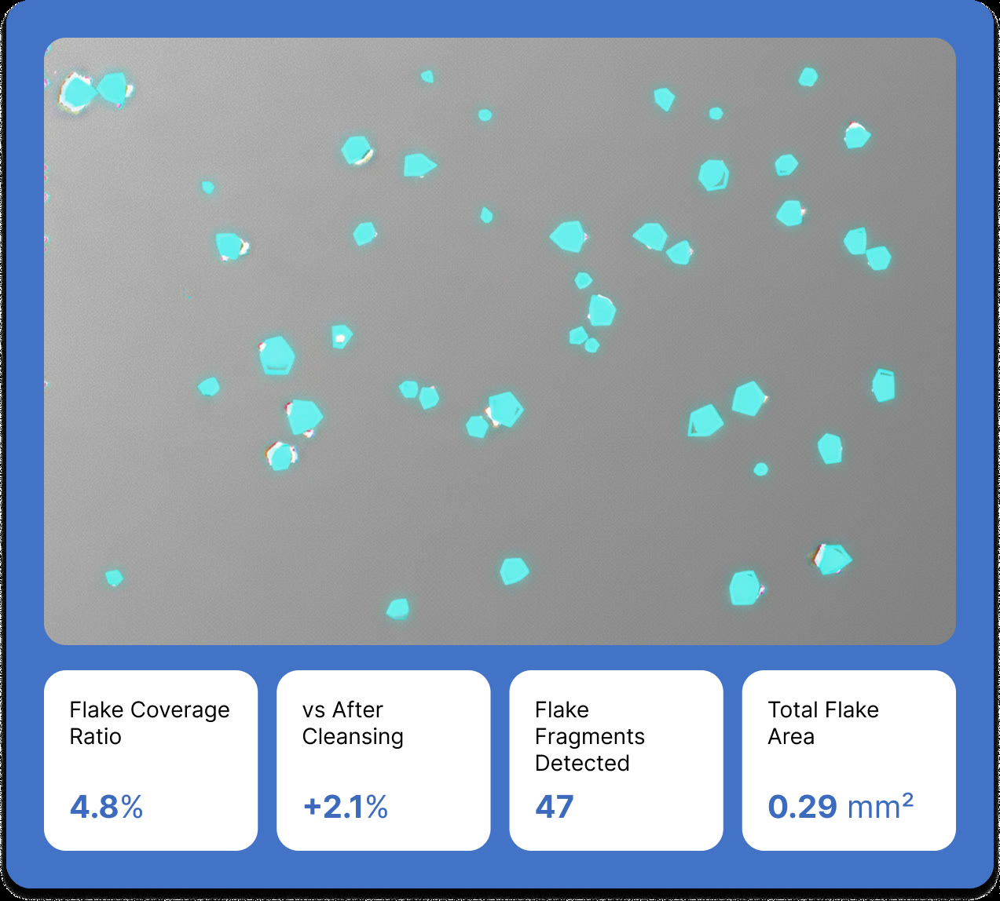
Skin flake
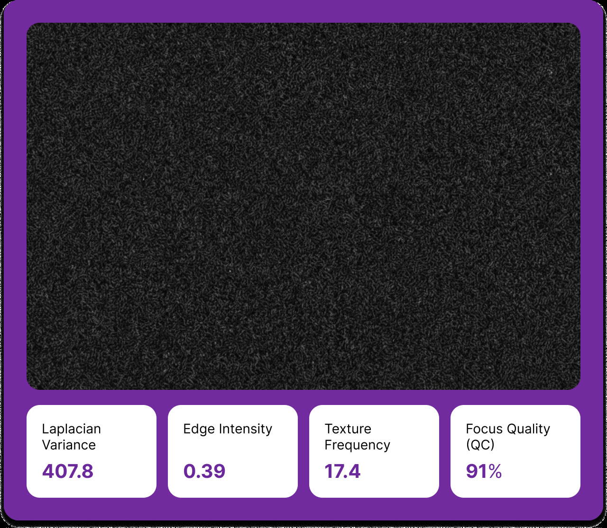
Texture roughness
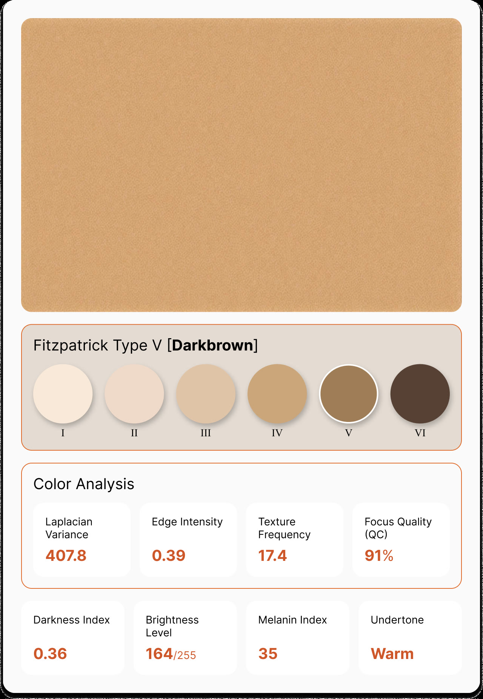
Skin tone & darkness
The commercial
A 40-second product commercial for SkinArch LC-OCT — scripted, dubbed, and animated as code with Remotion via Claude Code, so every scene renders frame-accurate from React.
SkinArch LC-OCT commercial · Remotion + Claude Code · 0:40
Selected scenes, each composed and rendered frame-by-frame in React:
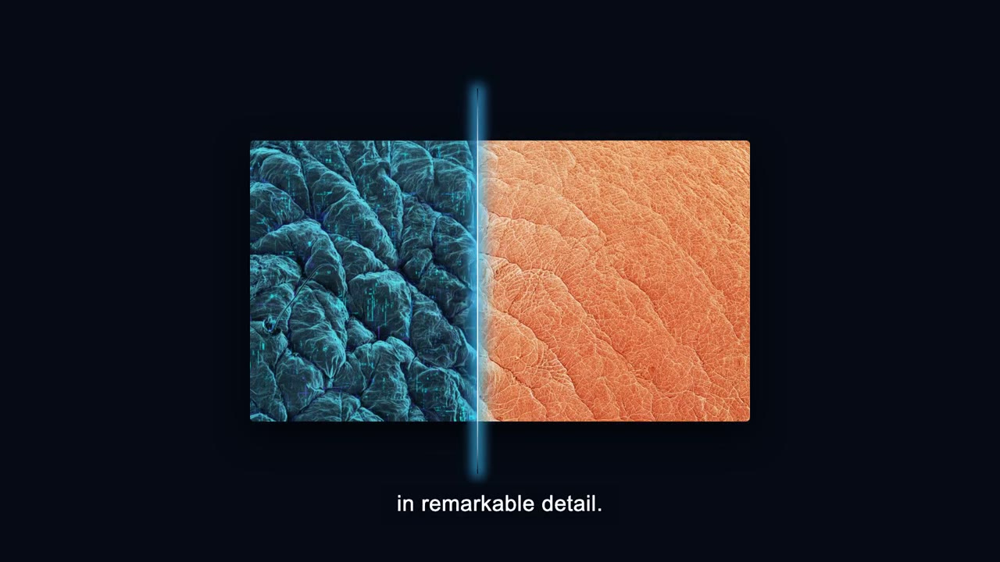
In remarkable detail
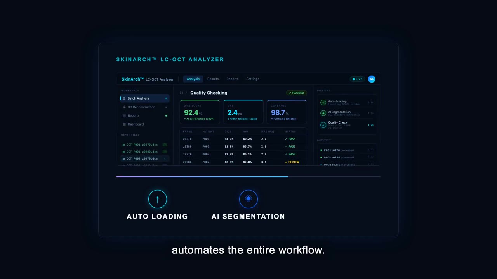
Automated workflow
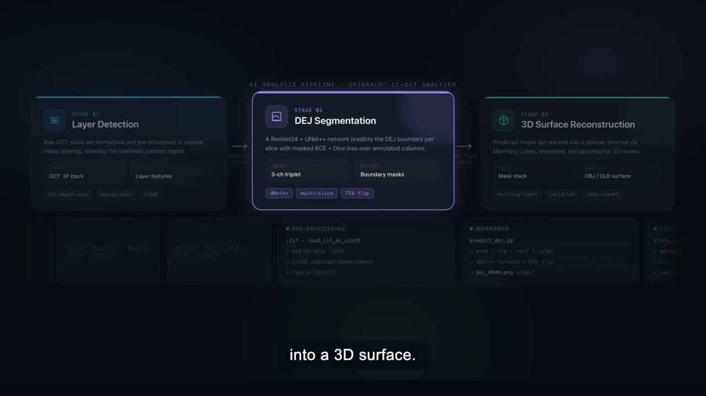
Layer → DEJ → 3D
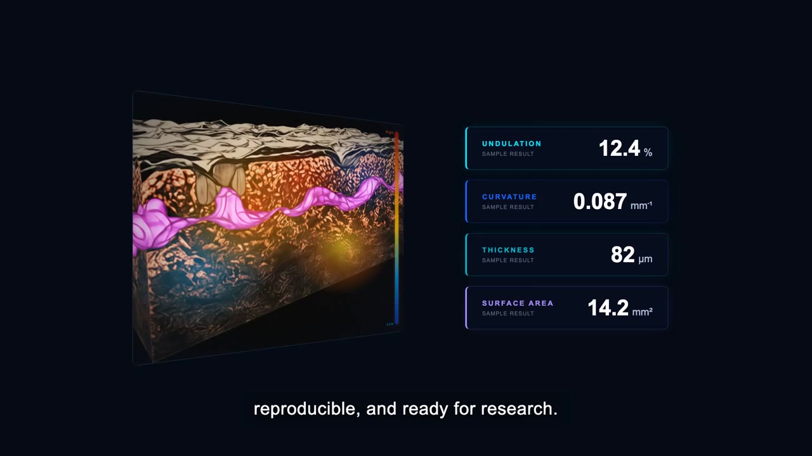
3D reconstruction
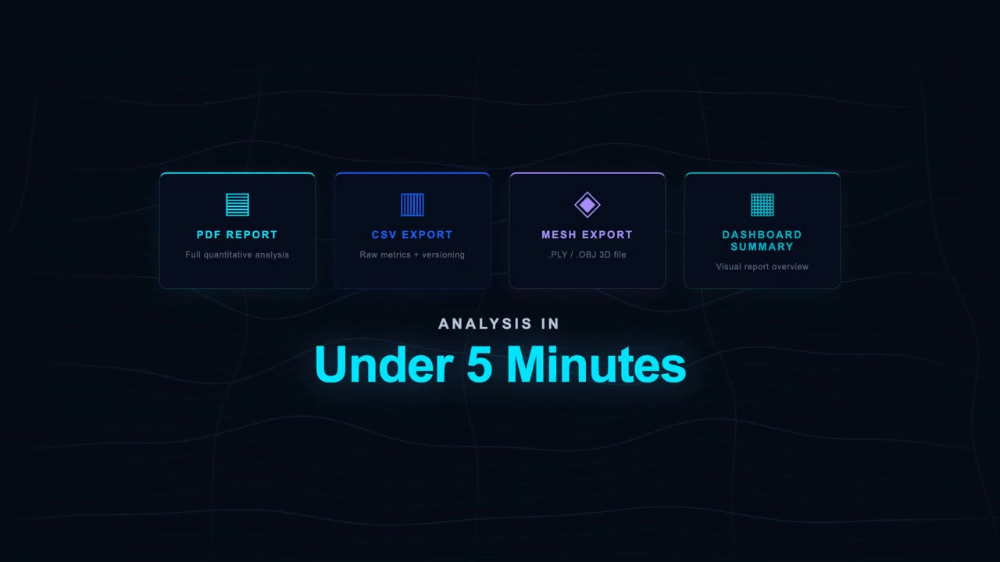
Under 5 minutes
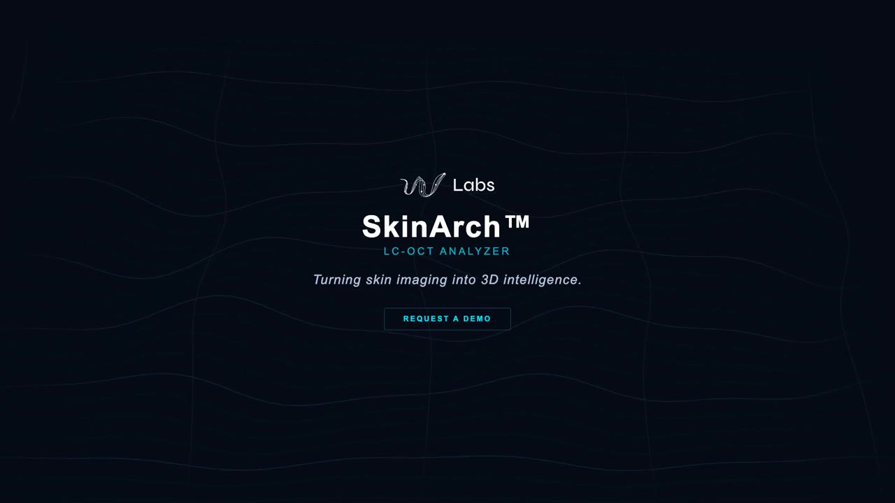
SkinArch LC-OCT
Built with Remotion + Claude
This commercial isn't cut on a timeline — it's programmed. Every scene is a React component composed in Remotion Studio and directed in plain language through Claude Code, then rendered frame-by-frame. Timings, colors, and typography live in code, so each frame is exact and reproducible.
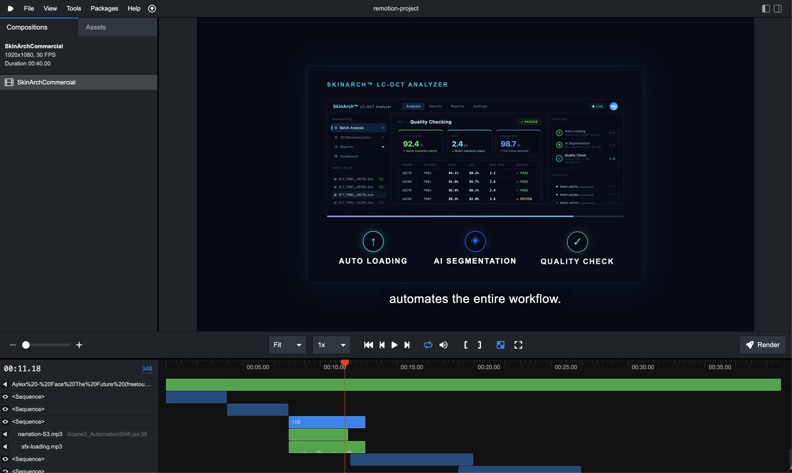
Studio — preview + timeline
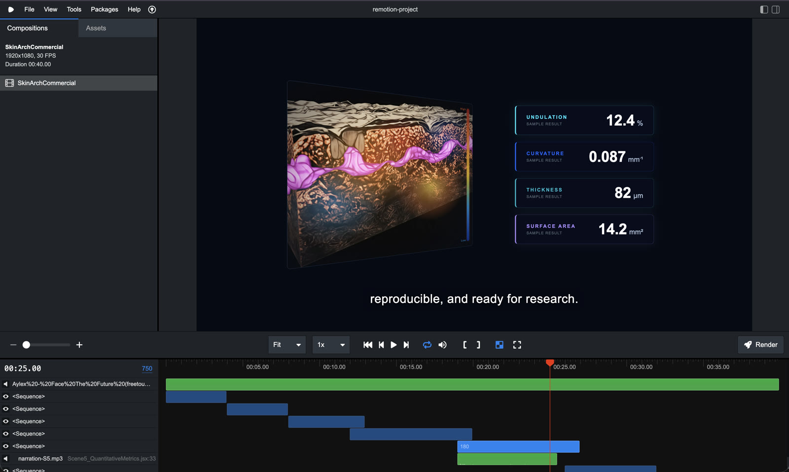
Studio — scene & sequences
Process
Anchored to the project's Jira (WS / WOS / AB) and the #project-lc-oct Slack channel — a 2026 arc from AI model to a client-facing product.
DEJ model & viewer foundations
The DEJ segmentation model reached V1 and a 3D viewer with calibration took shape — the technical backbone the viewer UI would sit on.
Commercial & product page
Produced the SkinArch LC-OCT commercial — script, dub, and Remotion animation — closed for release, and opened the LC-OCT product-page content on the W Labs site.
Viewer UI redesign
On a request to improve the LC-OCT viewer, I provided the redesign and guidelines for the optical-microscope / OCT viewer — including the red DEJ-line overlay toggle.
Shipped to clients
The redesign was implemented and went live at viewer.wsoft.space, with access granted to external stakeholders — followed by an ongoing improvement-and-fixes track.
The LC-OCT viewer redesign
The viewer is where LC-OCT becomes usable: a browser tool that loads an optical/OCT scan and overlays the AI-segmented dermal-epidermal junction as a red line you can toggle on and off against the original. The redesign brought a cleaner layout, a settings modal, and an accent-color system to a dense scientific interface — implemented in a React + Vite + Tailwind front-end and shipped to clients (AbbVie among them).
Live UI demo · DEJ overlay toggle · viewer.wsoft.space
Outcome
SkinArch came together as a complete go-to-market surface for W Labs' skin-analysis line: a research-grade product page and single-pager, a polished coded commercial, and a redesigned LC-OCT viewer running in production for real clients. Across product, motion, and UI, the throughline was making credible but complex science feel approachable — for buyers, for stakeholders, and for the researchers using the tool day to day.